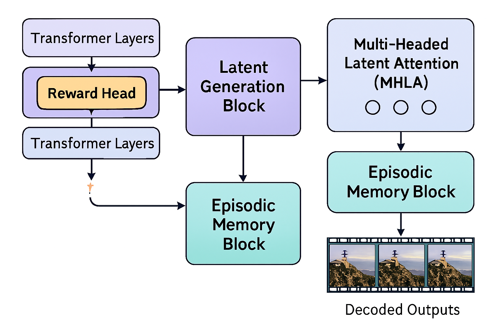
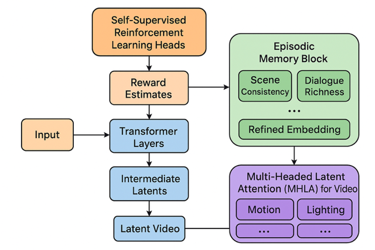

What is the video modality?
⸻
Video is not simply a sequence of images — it is a fused spatiotemporal modality that combines:
⸻
Vision (space) — per-frame spatial detail (objects, texture,colors,lighting). Time (motion) — frame-to-frame dynamics, causality, and temporal dependencies. Audio (sound) — speech, music, ambient noise, and prosody tightly synchronized with visuals.

⸻
Practically: visual data is 3‑D in the sense of (x, y, t) and the audio stream is an integral, temporally aligned channel. High‑quality generation therefore requires models that represent and reason about spatial structure, temporal continuity, and audio–visual synchrony together.
⸻
Two broad classes of video generation models
Cinematic /Decoded Video Models — Examples: Sora, Veo‑3, Haulio, Kling — Typical architecture: 3D diffusion or 3D transformer → latent sampling → decoder → pixel/video output. — Purpose: produce high‑fidelity, human‑facing video (films, ads, UIs). Requires a decoder and focuses on visual realism + synchronized audio.
Why audio as a core part of the modality of video matters (short list)
Synchronization: lip sync, dialogue timing, and action–sound correlations. Narrative signal: music and sound design often carry pacing and emotional arc. Disambiguation: audio resolves ambiguous visual scenes (dialogue, off‑camera events). Perceptual realism: mismatched audio breaks perceived realism instantly.
Current Landscape of Video Generation: Capabilities and Limitations
Today’s state-of-the-art video generation models have made impressive strides, but they remain largely in the realm of short clips, simple continuity, and limited temporal scope. Key characteristics include:
Length: Most models generate videos from seconds up to around 1 minutev at maximium reliably; longer videos degrade in temporal coherence and visual consistency.
Continuity: Frame-by-frame realism has improved, but maintaining scene consistency, lighting continuity, and coherent object behavior across longer stretches remains challenging.
Narrative & Dialog: Current systems struggle with realistic multi-character interactions, long-range narrative arcs, and meaningful dialog synchronization.
Audio: Audio is often generated separately or post-hoc, leading to desynchronization or lack of contextual integration with visuals.
Computation: Generating high-resolution videos with rich temporal detail demands immense compute, often limiting research and practical applications.
🔸 Video’s Richness Comes at a Cost
Video is the most information-dense modality — combining space, time, motion, and sound — which makes it the ideal training ground for world modeling. But that same richness makes it the hardest to model. The input dimensions of video (especially with high resolution, long duration, and audio) are massive.Even state-of-the-art generative models like Sora and Veo 3 can only produce video in short bursts — typically under one minute — before quality degrades or coherence breaks.Why? Because the computational demands of processing and generating high-fidelity video over time are still immense. Training on video is also harder: unlike static images, video requires modeling temporal continuity, physical realism, and synchronized audio — all within an enormous latent space. Video is where AI learns the structure of reality — but it’s also where today’s models hit their computational limits. That richness is exactly what makes video the ideal domain for video generation and world modeling — but also the hardest to generate.Which is why p predict it will be the slowest of the 3 state of the art modalities in advancment.
⸻
Despite progress, the generated outputs are closer to “video toys” or visual snippets than truly intelligent cinematic or embodied simulations.
⸻
⸻
Core Backbone Layers in 3D Diffusion Models: Detailed Explanation
⸻
Convolutional Layers (Conv layers) + Channels + Stride/Padding
Function: Extract spatial features from video frames or latent representations. In 3D diffusion, these convolutions operate over spatial dimensions (height, width) and sometimes temporal frames. Channels: Represent feature complexity; deeper layers increase channels to capture more complex features (e.g., from 128 to 1024). Stride: Controls how much the convolution kernel moves over the input. Larger stride (e.g., 2) downsamples spatial resolution, reducing size and increasing receptive field. Padding: Preserves spatial dimensions by adding zeros around input edges to keep output size consistent or control output shape.
⸻
SiLU Activation (Sigmoid Linear Unit, aka Swish)
Function: Nonlinear activation function applied after convolutions or dense layers. Why SiLU? Provides smoother gradients than ReLU, improving gradient flow and helping deeper models train better. Formula: (x) = x (x) where is the sigmoid function. Impact: Helps the model learn complex nonlinearities without dying ReLU problems.
⸻
Normalization Layers (GroupNorm > BatchNorm)
Function: Normalize activations to stabilize training and improve convergence. GroupNorm vs. BatchNorm: BatchNorm depends on batch statistics and can be unstable with small batch sizes. GroupNorm normalizes across channels in groups and works consistently even with small batches, common in memory-heavy diffusion training (batch size 1–4).
Benefit: Maintains stable activations regardless of batch size or input resolution.
Group Normalization – a normalization technique used in modern diffusion models instead of BatchNorm. It normalizes across groups of channels in each individual image, making it more stable during training and effective for small batch sizes – which is common in generative models like MidJourney and Stable Diffusion.
Group Normalization still standardizes the features, just like BatchNorm – the difference is what it standardizes across.
GroupNorm: Normalize across groups of channels within each individual image
Batch norm is NOT used in State-of-the-Art diffusion models, group norm is.
⸻
✅ What Both BatchNorm and GroupNorm Do:
They normalize the input features so that:
• Mean ≈ 0
• Standard deviation ≈ 1
This stabilizes training, accelerates convergence, and prevents exploding or vanishing gradients.
Normalizes the output of feature maps within each individual image by splitting channels into smaller groups (e.g., 32 groups). • Unlike BatchNorm, it doesn’t rely on batch statistics, which makes it far more stable when batch sizes are small or variable – a crucial property for diffusion models. • This normalization helps the model maintain consistent gradients and stable activations across noisy inputs during the denoising process. • Used in all modern diffusion architectures like Stable Diffusion, GLIDE, Imagen, and likely MidJourney. ⸻
⸻
Attention Layers
Self-Attention: Enables the model to capture long-range dependencies within spatial and temporal dimensions of the video latent. Allows information from distant pixels or frames to influence each other, essential for temporal coherence. Cross-Attention: Used especially in text-conditioned diffusion (text-to-video/image) to align generated visuals with input text embeddings. Multi-Head Attention (MHA): Splits attention into multiple “heads” to jointly attend to information from different representation subspaces, improving context capture.
⸻
Residual Blocks (ResBlocks)
Function: Combines convolution, normalization, and activation with skip connections to enable direct gradient flow through the network. Skip Connections: Help prevent vanishing gradients by allowing the network to learn identity mappings easily. Why important: Crucial for training very deep networks by preserving low-level details and stabilizing learning.
⸻
Skip Connections in U-Net Structure
Function: Connect downsampling path (encoder) layers to corresponding upsampling path (decoder) layers horizontally. Purpose: Prevent loss of fine spatial details by concatenating encoder features directly into decoder layers, improving high-resolution output quality. Effect: Enables the model to combine coarse, global context with fine, local details.
⸻
Upsample / Downsample Layers
Downsample Layers: Reduce spatial resolution (height, width) to increase receptive field and reduce computation (e.g., Conv2d with stride=2 or average pooling). Upsample Layers: Increase spatial resolution back to original size, often via nearest-neighbor or bilinear interpolation followed by convolution to refine features. Role in diffusion: Allows the model to operate at multiple spatial scales, crucial for reconstructing fine details while capturing global context.
Less Frequent but Important Layers
⸻
Dense (Feedforward) Layers
Function: Fully connected layers, usually inside attention blocks, to process token embeddings or time-step embeddings. Role: Help transform features nonlinearly, expanding the model’s expressive power, especially in temporal embedding or transformer submodules.
⸻
Layer Normalization (LayerNorm)
Where used: Common inside transformer-based attention blocks rather than pure CNN UNets. Function: Normalizes activations across feature dimensions for each sample independently, improving training stability.
⸻
Time Embedding Layers
Function: Encode the current diffusion timestep (where the model is in the denoising process) as a vector. Typical Architecture: Dense layer → SiLU activation → Dense layer-SiLU activation, repeat until the time embedding block is over Purpose: Allows the model to condition its output on the progress of the diffusion process, adapting noise removal behavior dynamically.
⸻
JEPA Core Transformer Block Layers
Embedding Layer Converts input tokens (or latent vectors) into dense vector representations of fixed size.
Positional Encoding Layer Adds information about the position/order of tokens since transformers are permutation-invariant. Usually fixed sinusoidal or learned positional embeddings.
⸻
Then each Transformer Block consists of:
LayerNorm (Pre-Attention normalization)
Normalizes inputs to stabilize training and improve gradient flow.
Multi-Head Self-Attention (MHSA)
Allows the model to weigh relationships between tokens at different positions.
Multiple attention heads attend to different subspaces for richer contextualization.
Residual Connection (Skip connection)
Adds input of the block to the output of MHSA for gradient stability and ease of optimization.
LayerNorm (Pre-FeedForward normalization)
Normalizes again before the feedforward layer.
Feed-Forward Network (FFN)
Usually two dense layers with non-linearity in between, applied independently to each token. Expands and contracts dimensionality (e.g., hidden_dim → 4*hidden_dim → hidden_dim).
Residual Connection (Skip connection)
Adds input of the FFN block to the output.
⸻ ⸻
Finally:
Softmax Used inside the attention mechanism to convert attention scores to probabilities.
GELU (Gaussian Error Linear Unit) Common activation inside FFN layers instead of ReLU; smoother gradient.
A couple notes:
Softmax is typically inside the attention block, not a separate layer applied on its own after all transformer blocks. So it’s part of the MHSA step, not outside.
The GELU is usually the activation used in the Feed-Forward Network between the two dense layers.
Positional encoding is only at the input level, not repeated inside each transformer block.
This is the core transformer block; variants might add dropout, layer scaling, or other tweaks.
JEPA’s Context Encoder and Predictor: Specialized Attention Blocks
At the core of JEPA’s architecture lie two critical components: the context encoder and the predictor. Both are designed as deep stacks of transformer-style blocks tailored to process complex, high-dimensional video latent data.
Structure Overview:
Multi-Headed Self-Attention: Extracts diverse sub-patterns by attending to multiple aspects of the input simultaneously, capturing rich temporal and spatial dependencies across video frames.
Feedforward Dense Layers (MLPs): These layers apply learned linear transformations interleaved with nonlinear activation functions (GELU), enabling the model to embed and transform the input features into richer, more abstract representations.
GELU Activation: The Gaussian Error Linear Unit introduces smooth nonlinearities, which aid gradient flow and improve learning dynamics compared to traditional activations like ReLU.
Layer Normalization: Normalizes the activations within each batch to have mean zero and variance one, stabilizing training by reducing internal covariate shift.
Residual Connections: Skip connections allow gradients to flow unimpeded through the deep network, addressing the vanishing gradient problem and helping maintain information fidelity across layers.
These components are repeated multiple times in sequence, forming long, deep blocks. The context encoder focuses on encoding all relevant contextual information from past video latents, building a comprehensive representation of the observed video environment. The predictor then uses this contextual embedding to forecast future latent states — essentially predicting what comes next in the video sequence.
In essence, both the context encoder and predictor act as specialized, long attention-based processing blocks, architected specifically to handle the rich, complex, temporally extended data unique to video understanding and generation.
They work together to:
Extract rich, hierarchical patterns from video latent inputs Embed them into meaningful context representations (context encoder) Predict future latent states based on that context (predictor)
both are long, deep attention blocks specialized for capturing and predicting complex temporal video information.

⸻
⸻
New Blocks for Advanced Video Generation Models
Building upon foundational architectures like JEPA and diffusion models, we propose novel architectural blocks that integrate self-supervised reinforcement learning and episodic memory mechanisms. These blocks aim to elevate video generation quality, temporal coherence, and goal-directed behavior.
- Self-Supervised Reinforcement Learning Heads (Reward Heads)
Purpose:
These blocks evaluate generated latent video outcomes against learned criteria of “goodness” (e.g., cinematic realism, coherent narrative, goal achievement in embodied tasks) and provide scalar or vector-valued reward signals. Unlike traditional RL which relies on external human feedback or proxy rewards, these heads train themselves through internal feedback loops derived from latent pattern prediction and counterfactual planning.
Structure and Function:
Integrated within transformer layers or appended to latent generation blocks.
Take intermediate latent outputs and produce reward estimates that score quality or task success.
Trained jointly with the base model to improve latent predictions toward maximizing these rewards over time.
Enable the model to self-improve by reinforcing patterns that lead to better outcomes, without explicit human labeling.
Allow counterfactual planning by simulating alternative latent futures and scoring their hypothetical rewards, guiding generation toward optimal sequences.
Input representation: Takes intermediate latent tensors from the generator (e.g., post-attention features). Architecture: Can be a small MLP or mini-transformer that maps latent patches to scalar/vector rewards. Training: Jointly trained with the main model using self-generated trajectories. Can implement temporal difference learning over latent sequences, similar to RL but without human supervision.
Use case examples: Cinematic reward: coherence in camera angles, lighting consistency, continuity errors. Embodied reward: predicted success in task completion (e.g., robot arm folding laundry) based on latent video.
- Episodic Memory Block
Purpose:
To enhance long-term temporal coherence and authored “feel” in video generation by consolidating sampled latent vectors into a cohesive episodic embedding.
Structure and Function:
Receives all latent vectors sampled during a specific inference pass (e.g., all clips/scenes relevant to the prompt). Concatenates these latents and processes them through a set of learned vectors representing key narrative and cinematic attributes (e.g., realism, dialogue richness, scene consistency). Produces a refined embedding that guides subsequent sampling and decoding steps to ensure outputs feel coherent, intentional, and polished. Acts like a “director” block ensuring the disparate pieces sampled combine into a unified, high-quality output.
Input: All sampled latent vectors relevant to the current prompt or scene segment. Internal structure: Multi-headed attention across temporal slices to model dependencies. Projection into a learned “episodic embedding space” representing narrative and cinematic attributes.
Vector design: Could include vectors for: realism, emotional tone, character consistency, lighting, and dialogue coherence.
Output: Refined latent embedding that guides the next sampling step or downstream decoding. Optional: Could maintain a persistent memory across multiple inferences for multi-episode consistency (long-term episodic memory).
- Multi-Headed Latent Attention (MHLA) for Video
Purpose:
To capture and integrate higher-level spatiotemporal patterns across video latents efficiently. This will allow the model to cpature higher order patterns from across all features of video:spatial,temporal,audio and protitize patterns most important to the output whcih will act in tandem with normal MHA which does this for total frames
Structure and Function:
Extends standard multi-head attention to latent spaces encoding spatial and temporal dimensions jointly. Dynamically routes computation to relevant heads or experts focusing on particular video aspects (motion, dialogue, lighting, etc.). Supports sparsity and conditional computation to scale efficiently (ties into Mixture of Experts ideas). Enables long-range temporal context modeling crucial for plot development, character consistency, and scene evolution.
Additional Details:
Temporal-spatial latent decomposition: Separate attention heads can specialize in: Motion patterns across frames Scene layout consistency Audio-visual alignment Character interactions
Routing: Use Mixture-of-Experts-style routing to dynamically assign attention heads to most relevant latent vectors. Efficiency: Sparse computation reduces memory and compute footprint for very long videos. Potential for extension: Hierarchical MHLA, where lower layers capture fine-grained frame details and higher layers capture scene-level structure or narrative arcs.
Summary of Interactions
Self-Supervised Reward Heads guide latent generation toward better quality via internal feedback.
Episodic Memory Blocks consolidate sampled latent fragments into unified, authorial embeddings.
MHLA Layers provide scalable, context-aware integration of complex spatiotemporal video information.
Together, these novel blocks constitute a powerful foundation for future video generation models that move far beyond current prompt-to-clip approaches into authentic cinematic and embodied AI applications.


video Generation
Where frontier models are headed — post-Sora, post-Veo, toward “Veo-6-tier” systems with deep architectural and narrative coherence.
📍 Overview
The future of video generation models will not be text-to-clip toys — it will be cinematically and causally intelligent simulators, trained on all video ever digitized, with episodic memory, character awareness, and compositional temporal planning.
⸻
🧠 Foundational Realization
Video is not multimodal — it is one fused modality of temporally synchronized visual, auditory, and linguistic cues.
Generation must respect this entanglement — not merely align them post-hoc.
⸻
📦 Training Substrate: “All Video Ever Digitized”
Sources:
• YouTube (diverse content: narrative, instruction, humor, vlogs, livestreams)
• Movies + TV (camera work, plot arcs, acting, lighting continuity)
• TikToks / Reels / Shorts (compressed high-intensity sequences)
• Podcasts + Video essays (complex verbal threads + minimal visuals)
• CCTV / Surveillance (causal body dynamics, passive events)
• Video Game Cutscenes (semi-synthetic emotional simulations)
Purpose:
• Learn realistic event progression, multi-agent choreography, emotional synchrony, dialog flow, lighting coherence, sound timing, spatial reasoning.
⸻
✅ Core Evolution
From:
• Prompt-to-clip (5–15s, generic, low continuity)like current video generation models
To:
• Prompt-to-episode (5–40 min), with:
• 🎭 Character persistence (appearance, voice, emotion)
• 🧠 Episodic memory (across scenes, arcs, spatial layouts)
• 💬 Narrative & dialogue continuity (interactions with purpose)
• 📽️ Scene-to-scene visual and lighting continuity
• 🎧 Synchronized audio: dialog, ambiance, and music
• 🧠 Emotionally & contextually aware character behavior,dialogue and development
• 🕹️ Multi-character interactions with goal-oriented actions
• Temporally coherent music, voice, and expression
⸻
🧠 Architectural Backbone
- MoE / MHLA-style Routing for Video
• Frame-wise & segment-wise expert routing
• Adaptive routing across:
• Visual streams
• Temporal events
• Audio (speech, music, ambient)
• Memory states
• Enables scaling depth and temporal length ⸻
- Episodic Sequential Memory Layers
• Tracks scenes, locations, character states, emotional arcs
• Allows:
• Long-range scene planning
• Context carryover between episodes
• Realistic multi-character plots
Longform memory stores:
• Scene goals
• Agent states
• Visual themes
• Narrative beats
⸻
- Conditioned Multi-Agent Behavior
• Characters with:
• Believable facial expression & body movement
• Persistent speech & goals
• Group dialogue logic and social dynamics
• Core for:
• Dramas, sitcoms, education modules, story-driven games
⸻
- Temporal & Spatial Consistency Layers
• Stabilizes:
• Lighting
• Scene geometry
• Environmental physics
• Emotional tone
• Prevents:
• Jitter
• Style drift
• Temporal dislocation
Character Identity + Group Dynamics Module
• Character tracking across time and scenes
• Maintains:
• Face, voice, gesture style
• Interpersonal goals + emotions
• Physical positioning + attention
⸻ ⸻
- Temporal-Spatial Style Consistency Layers
• Prevents:
• Flicker
• Expression collapse
• Background drift
• Lighting mismatches
• Dialogue–emotion desync
⸻ ⸻
🚀 Implications (Why It Matters)
When this tier of DNI for video arrives:
• 95% of animation, cutscene, explainer, and short film pipelines collapse into prompt–edit–review cycles
• Entire creative industries shift to co-piloting agents with specialized episodic memory
• Education, simulation, storytelling, and marketing are transformed
• “Show, don’t tell” becomes trivial at production scale
⸻
🧭 Example Applications
• 🎮 Video game previsualization with consistent characters and world logic
• 🧪 Scientific simulation visualization in real-time (e.g. cell processes, climate)
• 🎓 Custom very accurate educational videos generated from lesson plans
• 📺 Personalized shows for children, tuned to learning goals and preferences
• 🎥 AI copilot for YouTubers, filmmakers, animators able to generate entire proprietary videos across all
• 🎮 Interactive video will become a reality, enabling advanced AI generated AAA-style hub worlds featuring dynamic characters, persistent memory, real-time environmental changes, and branching narratives — all generated through natural language prompts and evolved over time with consistency(which we see VERY minuscule, weak version of with genie 3)
• 🎮 gaming companions that play video games with you or take over playing when you ask it to and communicates in real time via text prompt or possibly voice
⸻
One of the most fascinating developments in multimodal AI is the recent Genie 3 model, which aims to model complex, real-world video data. Unlike typical multimodal models that handle both images and text, Genie 3 specializes purely in video — capturing the dynamic, temporal flow of the world.
A helpful way to conceptualize Genie 3’s architecture is to think of it like a LEGO system, where multiple pretrained “bricks” or components snap together under a blueprint that orchestrates the entire process. Here’s a breakdown of its modular pieces:
VQ-VAE (Vector Quantized Variational Autoencoder): This acts as the compression and decompression brick. Video data is high-dimensional and expensive to process directly. VQ-VAE compresses raw video frames into discrete latent tokens, dramatically reducing complexity while preserving key visual and temporal information. On the output side, it decompresses tokens back into video frames. Transformer:
The transformer component is the logic and generation brick. It models sequences of compressed tokens over time, learning to predict what comes next based on context. Because transformers excel at capturing long-range dependencies, they’re ideal for understanding the flow of events and actions across video sequences. Action Embeddings:
These are the steering knobs that guide the model’s behavior. Action embeddings condition the transformer’s predictions, enabling it to generate specific actions or sequences in video—such as someone walking, jumping, or interacting with objects—on command. The Blueprint (Final Model):
The complete Genie 3 model is essentially the blueprint that integrates all these bricks into a cohesive system. It defines how compressed tokens flow through the transformer under the guidance of action embeddings, and how the decoded video frames emerge from that process.
This modular design offers significant advantages:
Flexibility: Each component can be developed, optimized, and even swapped independently. For example, improvements in compression techniques can enhance VQ-VAE bricks without changing the transformer logic. Scalability: Because video data is massive, breaking down the problem into discrete steps lets Genie 3 scale efficiently to complex real-world scenarios. Focus on Dynamics: By specializing in video (rather than static images), Genie 3 aims to model not just what things look like, but how they move and interact over time—offering a path toward richer, more realistic understanding of the world.
when all 3 modles are unified into a single transformer architecture, models like Genie 3 — equipped with an Action Embedding module — could theoretically support real-time cinematic generation (TV or movie scenes) guided by natural language. However, the compute requirements are extreme, given the sheer number of frames, spatial resolution, temporal coherence, and interaction dynamics involved.
Possibilities with Interactive Video
- Interactive Movies and Storytelling
Viewers influence plot directions, character decisions, and endings in real time. Narrative adapts dynamically based on viewer reactions, mood, or preferences. Multi-threaded storylines where each watch-through is unique, personalized to emotional and cognitive profiles.
- Personalized Cinematic Experiences
Films tailored on-the-fly for cultural background, language, or even psychological needs. Adaptive pacing, music, and dialogue shifts to maximize emotional impact.
- AAA-Quality Game Hub Worlds and Cutscenes
Procedurally generated, explorable worlds with cinematic quality graphics and coherent story arcs. In-game cinematics generated in real time, responsive to player actions and choices. Characters with evolving behaviors, motivations, and memories, creating truly dynamic gameplay narratives.
- Real-Time Virtual Social Spaces and Events
Fully interactive concerts, conferences, or social hubs with AI-generated audiovisual environments. Personalized avatars that act, speak, and react naturally, powered by deep video and multimodal models.
- Educational and Training Simulations
Immersive, adaptive video scenarios for complex skills training (medicine, aviation, crisis response). Realistic role-playing with virtual humans that respond with nuanced emotional and behavioral cues.
- Hybrid Entertainment and Utility
Mixed reality applications where interactive video overlays real environments with rich, evolving digital content. Virtual assistants or companions embedded within cinematic, immersive video contexts.
Without a breakthrough in architectural efficiency — such as a Mixture of Experts (MoE)-style routing for video tokens or radically compressed latent spaces — this vision remains speculative at full scale. Current methods can support short-form or episodic scenes, but real-time movie-length generation is likely a long-term goal, not an imminent capability.
⸻
7.Scenario Exploration: Highly detailed, dynamic reenactments of natural disasters, economic events, or social interactions — useful for education, training, and decision-making.
⸻
8.Virtual Experiences: Richly detailed virtual tours of inaccessible places (historical sites, deep oceans, space missions) with the ability to interact and influence the experience in real time.
⸻
9.Phenomena Simulation: Visualizing complex physical or social processes (climate models, urban development, biological growth) in ways accessible and understandable to experts and laypeople alike.
⸻
Looking Ahead: The Future of Interactive Video in DNI
While early models like Genie 3 hint at the potential for real-time, interactive video worlds, true mastery over video — integrating ultra-realistic visuals, seamless temporal coherence, and rich audio — remains years away. Given that video is the richest and most computationally demanding modality, it will likely be the slowest to mature among the core modalities.
When these challenges are overcome, the implications will be profound: fully dynamic, highly immersive interactive movies, virtual environments for advanced simulations, training, and entertainment that blend hyper-realism with meaningful user interaction. Until then, incremental advances will steadily build the foundations of this exciting frontier.
⸻
🧩 On Video Modality
Video is not multimodal in the architectural sense — despite containing vision, time, and audio. All features are embedded into a unified latent space. This makes it a single, highly complex modality.
• Multimodal models (e.g., image+text, audio+text) maintain separate encoders and latent spaces for each input type.
• Video generation models fuse everything (frames, motion, sound) into one learnable space, often with 3D diffusion latents or tokenized video segments.
• Thus, while video includes multiple perceptual elements, it is not multimodal from a modeling perspective — it is a monomodal super-modality.
This distinction matters when designing new architectures or benchmarking generative fidelity: video isn’t multimodal—it’s deeper.
⸻
⸻
📐 System Capabilities — Future Benchmarks
✅ Prompt-to-Episode Generation
• 10–20 minute vidoes
• Emotionally intelligent dialogue
• Physical realism
• Cinematic pacing
• Multi-agent plotlines
⸻ ✅ Style Transfer + Retargeting
• “Make this in Wes Anderson’s style”
• “Set it in a 1930s noir tone”
• “Animate this scene using Pixar-style rendering”
“Animate this movie or video game using unreal engine 5 rendering” ⸻
✅ Real-Time Editing / Simulation
• Swap actors, plot branches, camera angle
• Adjust tone, pacing, genre in seconds
• Embodied NPCs for games + education
⸻
🧮 Reality Check
• Current models are still primitive compared to this vision.
• Achieving this requires:
• Orders-of-magnitude more compute
• Breakthroughs in video memory, agent modeling, dialogue planning, and temporal stability
• Likely a 3D diffusion-based architecture with powerful routing and long-horizon memory
⏳ Estimated timeline: more than 10 years
The Power of Pattern Recognition:
Most of what humans do every day doesn’t require deep scientific understanding or original imagination. Instead, it hinges on advanced pattern recognition—learning and applying reliable sequences of actions that lead to desired results.
Take cooking as an example. When following a recipe, you aren’t performing molecular chemistry using a deep scientific understanding; you’re executing a set of proven steps that reliably produce a particular dish. Similarly, driving a car doesn’t demand a detailed scientific understanding of the physical world. Instead, drivers rely on an internalized world model built from experience—recognizing patterns like traffic rules, obstacle avoidance, and cause-and-effect in the environment.
Manufacturing electronics or assembling clothing also follow this principle. Workers do not understand every material property or production process scientifically, but they expertly replicate and optimize sequences of actions demonstrated over time depending on use case through repetitive sequences of well-defined actions and quality checks — patterns that can be observed, learned, and automated without requiring deep domain expertise.
Consider gardening or farming: gardeners don’t understand the complex biology of soil microbes or plant genetics. Instead, they recognize seasonal patterns, watering schedules, and signs of plant health to cultivate crops successfully.
Art and Music: While often seen as creative, much artistic expression involves recognizing and recombining familiar patterns of color, shape, rhythm, and melody. Human artists learn styles and techniques that they replicate or subtly modify based on patterns they’ve absorbed over time. Much of what humans create—whether art, music, writing, or even daily problem-solving—relies heavily on recognizing and recombining patterns learned over time. When you paint a picture, compose a song, or write a story, you’re often blending familiar elements in new ways, based on what you’ve seen, heard, or read before. This kind of creativity, while impressive, is largely pattern-based.
However, true ingenuity goes far beyond pattern recognition. It involves fundamental breakthroughs that reshape entire fields of knowledge or culture. This level of creativity demands:
Abstract reasoning — thinking beyond the immediate data or patterns to grasp hidden principles.
Deep understanding — comprehending the core mechanics of complex systems or ideas.
Novel conceptual leaps — forming ideas that have never been imagined before, opening new paths for thought and discovery.
Language Use: Everyday conversation and writing frequently rely on learned linguistic patterns, idioms, and social cues,contextual patterns associated with different words(which words are used together most often?,what context do these words make sense in ? which ones do they not? how do these words relate to other words ? do they match the context? ) the human brain does this automatically, rather than novel invention of new grammar or concepts.
This reliance on pattern recognition explains why foundation models in Deep learning which excel at extracting and generalizing patterns from massive datasets, are uniquely suited to automate or augment a wide range of human activities—especially those that don’t demand original creativity or complex scientific insight.
⸻